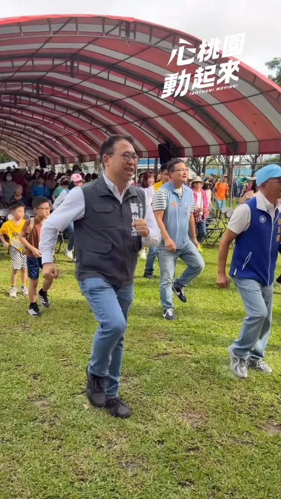
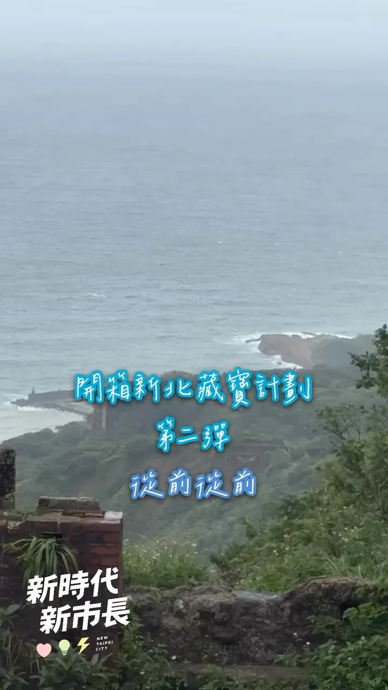
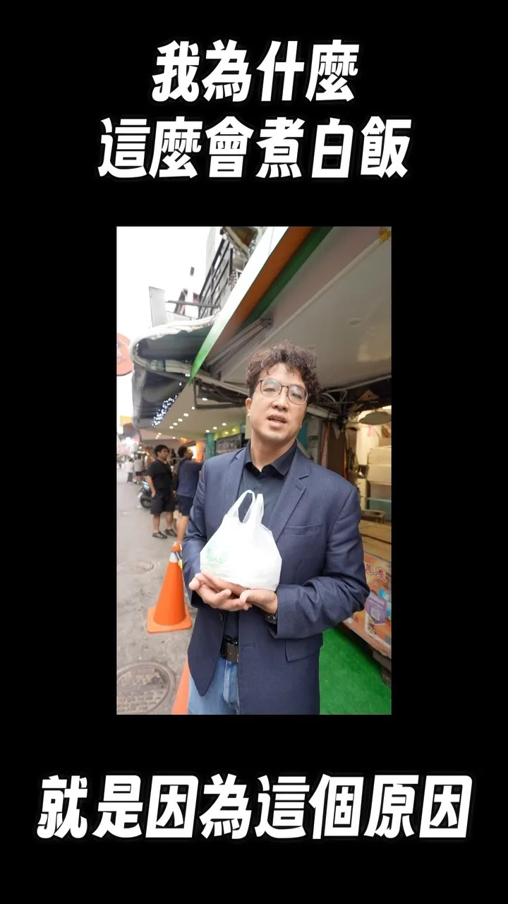
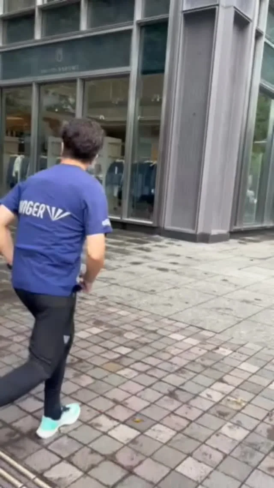
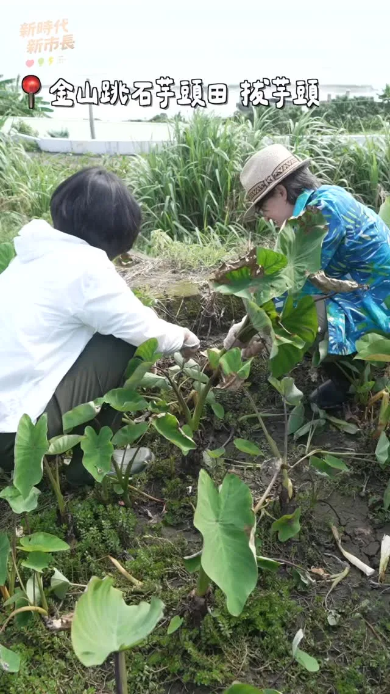
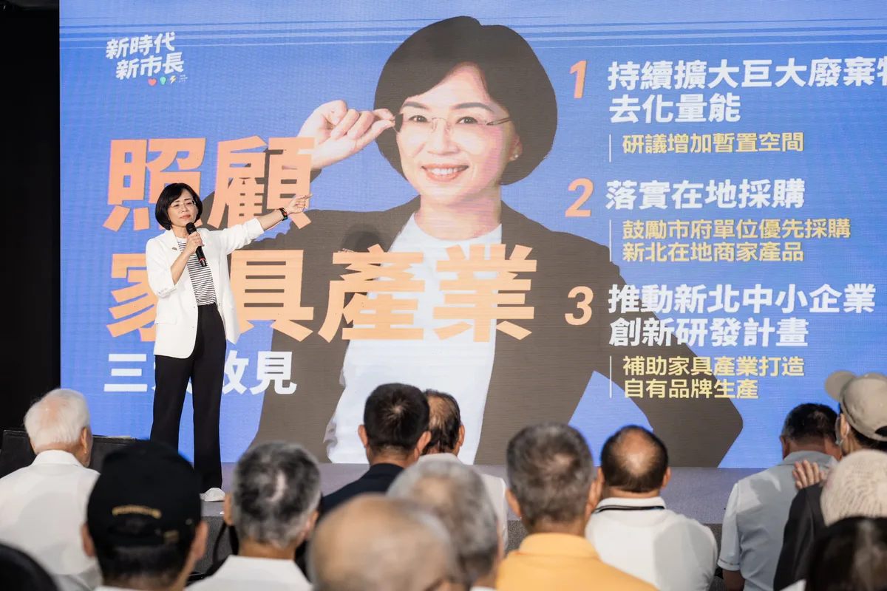
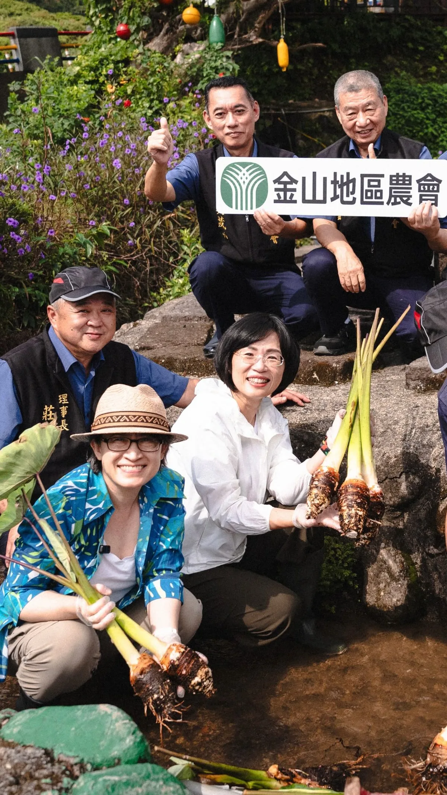
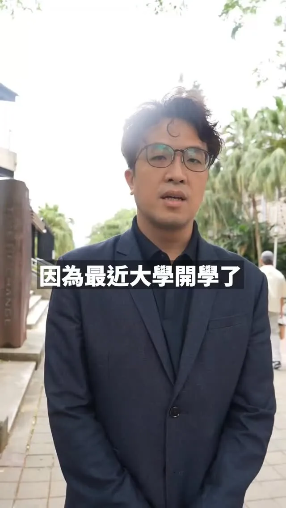

MAYOR2026.OBSERVE.TW
整理臺北、新北、桃園、臺中、臺南、高雄市長候選人的官方公開發文，跨平台合併時間軸與議題比例。
Six Municipalities
最後更新 2026-09-12 17:56
Latest

總統來到何欣純競總成立大會 @Chingte_Taiwan

@schuanglawyer:尋找桃園杰出好青年 .ᐟ 杰伴小隊熱血招募中🔥 桃園需要更多青年的聲音，來和黃世杰一起「杰伴同行」吧！ 我要邀請對桃園有愛、有想法、有服務社會衝勁跟熱血的杰出好青年，一起來分享你對桃園的觀察、期待和願景。 年輕桃園的未來，青年不缺席！ 現在就加入杰伴小隊，一起球給世杰，行動出自己的未來💖


@chen_tingfei:今天我與團隊夥伴們正式進駐競選總部！ 這裡不只是作為選舉基地，空間設計上也有很多巧思，我們結合自然、親子、生活等概念，成為「美學台南」的選戰空間，讓政治也能充滿溫度！ 今天謝土儀式圓滿完成，也代表開始進入下一階段。我有信心，和台南隊的夥伴們一起，一步一步把我們對台南的想像變成行動，也把大家對這座城市的期待接起來。 10月11日下午3點，競選總部成立大會，邀請大家一起來競總走走！ 台南市長候選人陳亭妃競選總部 📍台南市永康區水漾路520號


@su.chiaohui:一早和新北隊一起到土城學府市場和鄉親好朋友問好！ 感謝大家的熱情支持，我們一起繼續拚！拚出新北新時代！

何欣純青商會🌏打造青年局 讓台中與國際接軌🤖

@schuanglawyer:早安☀️先來暖身一下，準備開啟充實的週末！


@pumashen:想拿沈伯洋的文宣品，不用再四處找啦！ ⠀ 「洋流好店」有沈伯洋的文宣品喔！ 也可以打開「洋流好店」地圖， 就能找到鄰近的友善店家索取文宣品， 也歡迎用行動支持店家。 ⠀ 如果你也願意在店內協助放置文宣品， 可以直接透過店家地圖申請加入「洋流好店」， 讓支持的力量遍布台北每個角落！⠀ ⠀ 📍查看洋流好店：https://storemap.puma.taipei ⠀ 一間店、一份文宣品，匯聚成改變台北的洋流。 ⠀ #台北順起來 #你的市長沈伯洋

開箱新北第二彈：從前從前 很開心第一波的【你家隔壁】收到大家的熱烈迴響，這一次，我想帶大家循著時間留下的線索，走進新北的故事。 水獺媽媽這波將攜手鬼才繪本作家信子 @quack1106 的人氣角色「奇怪阿嬤」、人氣插畫家瑞秋廖 @rachelliao_illustration 畫的「呱鬆蛙蛙」，一樣設置5個藏寶點，將寶盒藏進承載著歷史記憶的角落。 大家快根據影片裡的線索，找到藏寶的地方，一起開箱新北的從前從前！ 🌟每人請拿「一份」鐵盒中的小禮物，讓較晚抵達的參與者也能發現驚喜～也歡迎留言給我喔！ 這次藏寶盒裡面又放了什麼？ 🎁水獺媽媽與奇怪阿嬤、呱鬆蛙蛙限量「聯名壓克力鑰匙圈」（2款各3個） 🎁水獺媽媽與奇怪阿嬤、呱鬆蛙蛙獨家「聯名貼紙」（2款各10張） 🎁加碼水獺媽媽角色貼紙（每個藏寶點不同）

@su.chiaohui:挺家具產業！解決業界痛點、助攻品牌轉型！ 我和新北家具相關產業認識超過十年，深知每一件家具背後，都是一代代職人累積的技術和心血。當產業面對廢棄家具清運的困難、低價進口產品競爭，以及品牌轉型等挑戰，未來的市政府更應該站出來，成為家具產業的後盾！ 很感謝今天家具產業的朋友們為我成立後援會，我也提出三項政見，期望能實質照顧大家，一起突破產業困境： ✅ 擴大巨大廢棄物去化量能 ✅ 市府帶頭支持新北在地及MIT產品，協助業者取得各項標章，提升競爭力 ✅ 推動家具產業加入「中小型企業創新研發計劃」，協助業者建立自有品牌 產業有技術，政府就幫忙找資源；產業有困難，政府就一起找方法。我會繼續努力，讓新北家具產業傳承好手藝、打造好品牌，在新時代開拓更大的市場！

來台大吃以前愛吃的美食～

何欣純競總成立大會 蔡其昌總召 @tsaimimi0416

何欣純競選總部成立

新台中 正式啟動！何欣純競選總部成立大會｜台中市長候選人何欣純 LIVE 🔴

@pumashen:體驗完運動驛站 結果時間大delay 趕緊跑回驛站換衣服 被無情幕僚錄下 拍攝者不救

台中，年輕的城市，滿滿年輕的活力、創意；不分世代、在台中這座城市都能找到屬於自己的生活與發展模式！新台中，交給何欣純！

@su.chiaohui:那天我和 @bikhimhsiao 美琴副總統到金山，和金山農會以及許多努力把金山、萬里的美介紹給更多人認識的青年夥伴、在地團隊聊聊未來我們對北海岸的想像。 我們也動手試試拔芋頭、洗芋頭和搓芋圓…真的不簡單🤣 術業有專攻，我們各自在自己的崗位上，一起努力，讓更多人看見新北最美的山海風景。

想拿沈伯洋的文宣品，不用再四處找啦！ ⠀ 「洋流好店」有沈伯洋的文宣品喔！ 也可以打開「洋流好店」地圖， 就能找到鄰近的友善店家索取文宣品， 也歡迎用行動支持店家。 ⠀ 如果你也願意在店內協助放置文宣品， 可以直接透過店家地圖申請加入「洋流好店」， 讓支持的力量遍布台北每個角落！⠀ ⠀ 📍查看洋流好店：https://storemap.puma.taipei ⠀ 一間店、一份文宣品，匯聚成改變台北的洋流。 ⠀ #台北順起來 #你的市長沈伯洋

20260911 談天說地論臺灣 @longmedia ｜龍介的直播

挺家具產業！解決業界痛點、助攻品牌轉型！ 我和新北家具相關產業認識超過十年，深知每一件家具背後，都是一代代職人累積的技術和心血。當產業面對廢棄家具清運的困難、低價進口產品競爭，以及品牌轉型等挑戰，未來的市政府更應該站出來，成為家具產業的後盾！ 很感謝今天家具產業的朋友們為我成立後援會，我也提出三項政見，期望能實質照顧大家，一起突破產業困境： ✅ 擴大巨大廢棄物去化量能 ✅ 市府帶頭支持新北在地及MIT產品，協助業者取得各項標章，提升競爭力 ✅ 推動家具產業加入「中小型企業創新研發計劃」，協助業者建立自有品牌 產業有技術，政府就幫忙找資源；產業有困難，政府就一起找方法。我會繼續努力，讓新北家具產業傳承好手藝、打造好品牌，在新時代開拓更大的市場！


@zenolai:趁著行程空檔來碗肉燥飯，也外帶幾份給助理們。 一碗肉燥飯，有人喜歡滷汁多一點、有人喜歡清爽一點，每個人口味不同；一座城市也是一樣，有不同的想法、不同的選擇。 高雄之所以偉大，就在於城市有多元的聲音，也有包容不同選擇的胸襟。我也會繼續努力，爭取更多市民的認同。 每一位認真打拚、用心經營的在地店家都相當不簡單，我們一起支持高雄好味道，也祝福大家生意興隆！

何欣純競總成立大會 鄭麗君行政院副院長這樣說 @lichiunTW

神力女超人來相挺，一起翻轉大台南｜謝龍介

@schuanglawyer:一早來到龍潭虹橋土地公，聽到全程以客語進行、遵循正統客家禮俗的三獻禮。身為客家子弟，真的非常感動。 承蒙桃園市禮儀承展協會用心協助，讓這場儀典莊重而圓滿。面對傳統文化的流失，時間不等人，未來世杰擔任市長，一定大力支持客家語言及文化復振，讓本土文化存續、客家精神永流傳！ 請伯公庇佑世杰，亻厓會煞猛守護桃園、守護台灣，摎大自家共下來打拚❤️

@prof.kochihen:四年前我們一起種下希望，四年後我們一起收穫改變！ 昨晚來到鳳山代天府，看著滿滿鄉親坐滿廟埕，心裡有很多感觸。 鳳山 對我來說，一直是很特別的地方。六歲時，我第一次當花童就在鳳山；2018年，我第一次站上萬人造勢舞台，也是在鳳山。那一次，我看見庶民的力量，也看見高雄人渴望改變的心。 四年前，我第一次大型造勢活動同樣在鳳山，直到今天，我仍然記得那些坐著輪椅、頭髮斑白的90歲老黨員緊緊握著我的手，告訴我：「中華民國靠你了。」那一刻，我感受到的不只是鼓勵，更是一份沉甸甸的責任。


@a_chun1973:今天我的競選總部成立！歡迎各位市民朋友來參加！ 台中，年輕的城市，滿滿年輕的活力、創意；不分世代、在台中這座城市都能找到屬於自己的生活與發展模式！ 新台中，交給何欣純！

那天我和 #蕭美琴 副總統到金山，和金山農會以及許多努力把金山、萬里的美介紹給更多人認識的青年夥伴、在地團隊聊聊未來我們對北海岸的想像。 我們也動手試試拔芋頭、洗芋頭和搓芋圓…真的不簡單🤣 術業有專攻，我們各自在自己的崗位上，一起努力，讓更多人看見新北最美的山海風景。
@su.chiaohui:開箱新北第二彈：從前從前 很開心第一波的【你家隔壁】收到大家的熱烈迴響，這一次，我想帶大家循著時間留下的線索，走進新北的故事。 水獺媽媽這波將攜手鬼才繪本作家信子 @quack1106 的人氣角色「奇怪阿嬤」、人氣插畫家瑞秋廖 @rachelliao_illustration 畫的「呱鬆蛙蛙」，一樣設置5個藏寶點，將寶盒藏進承載著歷史記憶的角落。 大家快根據影片裡的線索，找到藏寶的地方，一起開箱新北的從前從前！

@schuanglawyer:今晚一口氣跑了八場中秋晚會🏃每次跟市民朋友碰面，都想趕快把我對桃園的願景跟熱情分享出去。 桃園是六都最年輕的城市，應該要有年輕城市的活力。建設要加快腳步，機能要加倍完整，生活要一天比一天更幸福！ 請大家成為我的力量，杰伴打造讓青壯世代放心拚、孩子快樂長大、長輩安心生活的宜居之城💖

@pumashen:來台大吃以前愛吃的美食～

【Otter Mom's Little Chats】Calling My Cat | Pet Companionship | Anticipation and Discovery | Child...